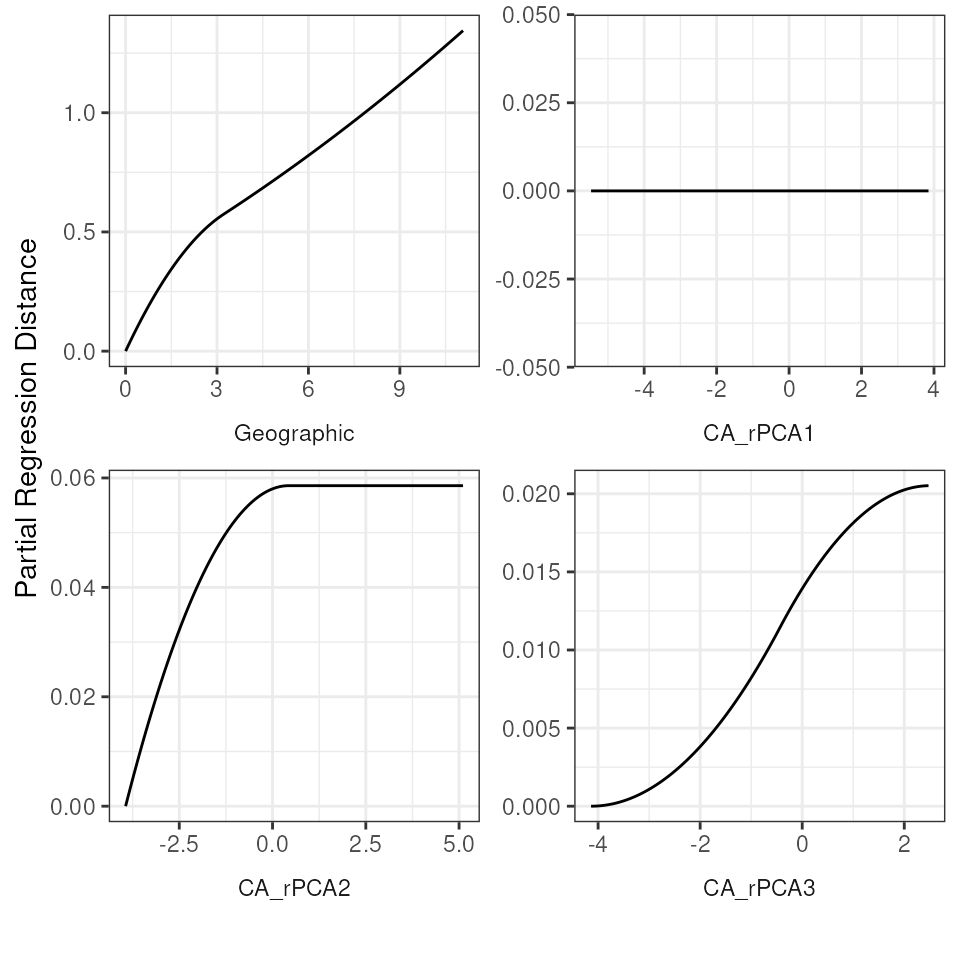
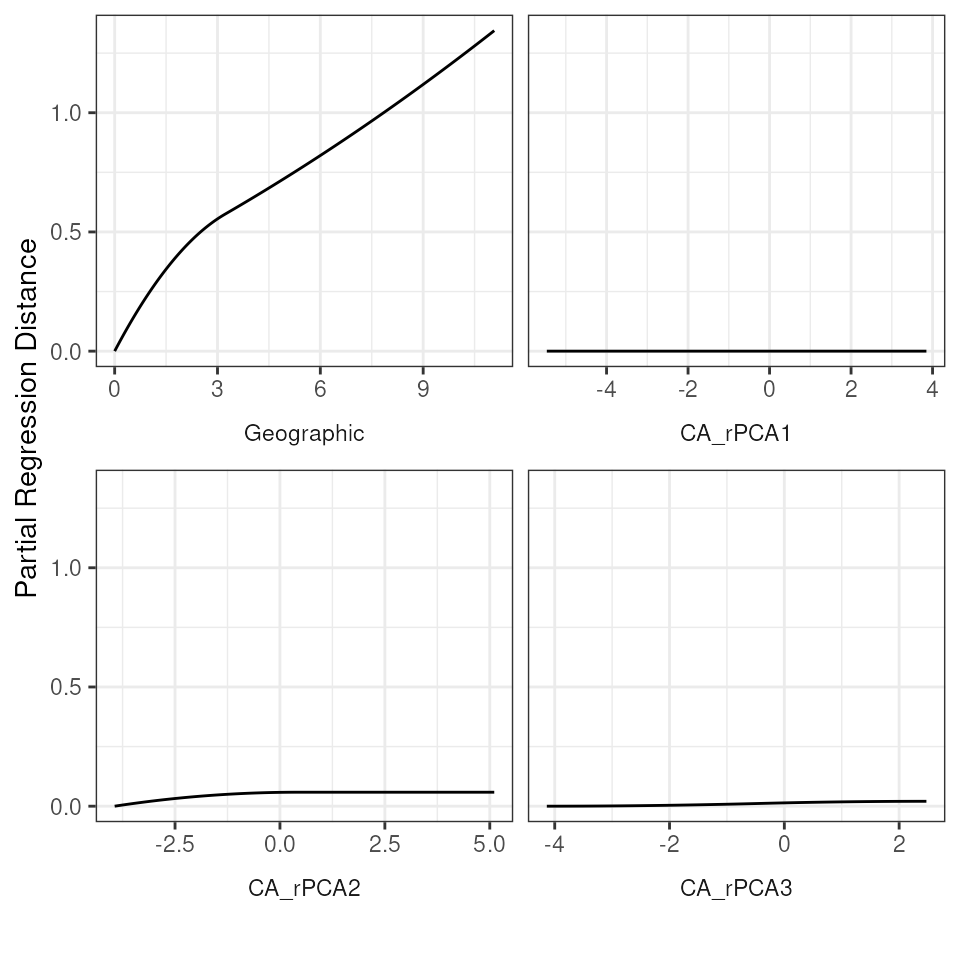

GDM
GDM_vignette.Rmd
# Install packages
gdm_packages()Generalized dissimilarity modeling (GDM)
If using GDM, please cite the following: for the GDM method,
Ferrier S., Manion G., Elith J., Richardson K. (2007) Using generalized
dissimilarity modelling to analyse and predict patterns of beta
diversity in regional biodiversity assessment, and for the
gdm package, Fitzpatrick M., Mokany K., Manion G.,
Nieto-Lugilde D., Ferrier S. (2022). gdm: Generalized Dissimilarity
Modeling. R package version 1.5.0-9.1.
Generalized dissimilarity modeling (GDM) is a matrix regression method in which explanatory variables (in our case, genetic data, in the form of a distance matrix) is regressed against a response matrix (e.g., environmental variables for locations from which samples were obtained and geographic distances between those locations). GDM calculates the compositional dissimilarity between pairs of sites, and importantly allows for nonlinear relationships to be modeled.
For additional information on GDM, please see Ferrier et al. 2007 for a description of its basic use in estimating patterns of beta diversity, Freedman et al. 2010 for a classic example of its use, and Fitzpatrick & Keller 2015 and Mokany et al. 2022 for perspectives on its application. Finally, our code primarily uses the gdm package which has excellent documentation (see here) including a thorough vignette that describes some of the theory behind GDM.
Within algatr, there is one main function to perform a GDM analysis:
gdm_do_everything(). This function runs the GDM (using the
gdm() function within the gdm package) and allows a user to
run a GDM with all variables, or with model selection to choose the
best-supported variables.
Contained within gdm_do_everything() are the following
functions, which we’ll walk through here:
gdm_run()runs the GDM itselfgdm_df()generates statistics and coefficients for predictor variablesgdm_plot_isplines()plots fitted I-splines for each variablegdm_map()generates a PCA map of compositional dissimilarity based on GDM results
Assumptions
There are a few assumptions built within this function that the user must be aware of: (1) the coords and gendist files must have the same ordering of individuals; there isn’t a check for this, and (2) this function assumes that each individual has its own sampling coordinates (even if population-based sampling was performed).
Running a GDM analysis in algatr will work for both individual-based (i.e., one individual per sampling locality or population) or population-based sampling. The test dataset was performed using individual-based sampling, and so this vignette will walk users through running GDM with that sampling scheme. For population-based sampling, users should provide allele frequency or site-based genetic distances with site locations rather than dosage matrices with individual locations. Alternatively, users can select a single representative sample from each population to mimic individual-based sampling, if so desired; the most important consideration is to ensure that genetic data match sampling locations. The remainder of the analysis is identical.
Read in and process input data
Let’s first load the objects within the example dataset.
load_algatr_example()
#>
#> ---------------- example dataset ----------------
#>
#> Objects loaded:
#> *liz_vcf* vcfR object (1000 loci x 53 samples)
#> *liz_gendist* genetic distance matrix (Plink Distance)
#> *liz_coords* dataframe with x and y coordinates
#> *CA_env* RasterStack with PC environmental layers
#>
#> -------------------------------------------------
#>
#> Extract environmental variables
To run GDM, we need to generate a site-pair table in which extracted you have extracted variable values for each site. Because we only have environmental layers for our example dataset, we need to extract the environmental values from these layers for each sampling locality in which lizards were collected:
env <- raster::extract(CA_env, liz_coords)Run GDM with gdm_run()
GDM with all variables
Given that GDM is a regression method, the “full” model (i.e.,
including all predictor variables) will include all environmental layers
in addition to geographic distance, which is also considered a
predictor. Thus, in this example, the maximum number of variables you
can end up with that are significant is four (three enviro PCs +
geographic distance). We can specify running the full model using the
model argument. Extracted environmental values for each
sampling coordinate are specified using the env argument,
and if genetic distances are not bounded by 0-1, they must be scaled
using the scale_gendist argument. Keep in mind that several
arguments are only for model selection and so will not be used.
gdm_full <- gdm_run(
gendist = liz_gendist,
coords = liz_coords,
env = env,
model = "full",
scale_gendist = TRUE
)GDM with model selection
We can also run a GDM using only significant variables (i.e., a “best” model). In this case, a variable selection process is done using a permutation test to assess significance: predictor variables are randomly permuted between sites and the deviance explained from the fitted model is compared to that obtained with random permutation. It is important to be aware that GDM (as implemented in the gdm package) always considers geographic distance as a variable and does not, by default, allow a user to perform variable selection without geographic distances considered. algatr has adjusted this functionality and will do variable selection on all predictor variables, including geographic distances.
There are a few additional considerations to make if running GDM with
model selection. The first is the number of permutations performed (the
nperm argument); these permutations represent the number of
times site-pair tables are permuted to perform a backwards elimination
procedure for variable selection. The next argument is sig,
specifying the significance threshold (alpha value).
N.B.: Sometimes, the gdm_run() function will return
NULL, implying that none of the predictor variables are significantly
associated with genetic distances. Be sure to run adequate numbers of
permutations; occasionally NULL will be returned when insufficient
permutations were specified.
See below for an example of how model selection would be run; this code is not run within the vignette because there is no significant GDM model for the algatr test dataset.
gdm_best <- gdm_run(gendist = liz_gendist,
coords = liz_coords,
env = env,
model = "best",
scale_gendist = TRUE,
nperm = 500,
sig = 0.05)
# Look at p-values
gdm_best$pvalues
gdm_best$varimpWithin the resulting object(gdm_best), the
pvalues and varimp elements are no longer NULL
(as they were with the full model); this is because model selection was
performed. pvalues indicate the significance of each
environmental variable with genetic distance (given the user-defined
threshold), and varimp contains information about variable
importance and relevant statistics about the model.
Interpreting GDM results
The resulting object from gdm_run() contains three
elements: model, containing information on the model that
was run, pvalues, and varimp. For the full
model, these latter two elements are empty because no model selection
was performed.
Let’s take a closer look at the model element. The
relevant items of this list are predictors (the predictor
variables that were considered in the model), splines
(three I-splines for each variable; see below for more information), and
coefficients (coefficients for each of the predictor
I-splines; i.e., 12 total). Predictor variables that have the highest
summed coefficient values are those that have most influence on
predicted dissimilarity. The predicted ecological distances are given
within the ecological element, predicted dissimilarity
within the predicted element, and observed compositional
dissimilarity within the observed element.
summary(gdm_full$model)
#> [1]
#> [1]
#> [1] GDM Modelling Summary
#> [1] Creation Date: Wed Nov 15 16:45:03 2023
#> [1]
#> [1] Name: $ Name: gdm_full Name: model
#> [1]
#> [1] Data: gdmData
#> [1]
#> [1] Samples: 1378
#> [1]
#> [1] Geographical distance used in model fitting? TRUE
#> [1]
#> [1] NULL Deviance: 131.531
#> [1] GDM Deviance: 83.008
#> [1] Percent Deviance Explained: 36.89
#> [1]
#> [1] Intercept: 0.363
#> [1]
#> [1] PREDICTOR ORDER BY SUM OF I-SPLINE COEFFICIENTS:
#> [1]
#> [1] Predictor 1: Geographic
#> [1] Splines: 3
#> [1] Min Knot: 0
#> [1] 50% Knot: 3.203
#> [1] Max Knot: 11.074
#> [1] Coefficient[1]: 0.44
#> [1] Coefficient[2]: 0.464
#> [1] Coefficient[3]: 0.447
#> [1] Sum of coefficients for Geographic: 1.351
#> [1]
#> [1] Predictor 2: CA_rPCA2
#> [1] Splines: 3
#> [1] Min Knot: -3.939
#> [1] 50% Knot: 0.413
#> [1] Max Knot: 5.107
#> [1] Coefficient[1]: 0.059
#> [1] Coefficient[2]: 0
#> [1] Coefficient[3]: 0
#> [1] Sum of coefficients for CA_rPCA2: 0.059
#> [1]
#> [1] Predictor 3: CA_rPCA3
#> [1] Splines: 3
#> [1] Min Knot: -4.138
#> [1] 50% Knot: -0.457
#> [1] Max Knot: 2.475
#> [1] Coefficient[1]: 0
#> [1] Coefficient[2]: 0.021
#> [1] Coefficient[3]: 0
#> [1] Sum of coefficients for CA_rPCA3: 0.021
#> [1]
#> [1] Predictor 4: CA_rPCA1
#> [1] Splines: 3
#> [1] Min Knot: -5.466
#> [1] 50% Knot: -0.914
#> [1] Max Knot: 3.849
#> [1] Coefficient[1]: 0
#> [1] Coefficient[2]: 0
#> [1] Coefficient[3]: 0
#> [1] Sum of coefficients for CA_rPCA1: 0Let’s assume we want to move forward with examining the results from
the full model. We can look at the relationships between both predicted
ecological distance (the raw predictor) and predicted compositional
dissimilarity against observed compositional dissimilarity using the
gdm_plot_diss() function. Within these plots, each data
point corresponds to a site-pair comparison, and the lines are obtained
by fitting (applying a link function) to the linear predictor.
gdm_plot_diss(gdm_full$model)
Plotting fitted I-splines for variables
Let’s plot the GDM-fitted functions for our full model. These
functions are fitted I-splines that relate each predictor variable to
the genetic distance data. Briefly, the maximum height of the curve
indicates the contribution of that predictor variable to changes
(dissimilarity) in genetic distances, and the shape of the curve
provides information on how genetic distances change across an
environment gradient for that predictor variable. The y-axis (“partial
regression distance”) relates the genetic distances to the variable when
all other variables are held constant. We can look at these I-splines
using the gdm_plot_isplines() function. In general, three
I-splines have been found to be sufficient to capture dissimilarity
across a gradient and avoids over-fitting (see Mokany
et al. 2022 for further information). As we can see from the below
plots, PCA1 has no relationship with genetic distance, which is also why
the coefficient for this variable is 0.
par(mfrow = c(2, 2))
gdm_plot_isplines(gdm_full$model)
Table of GDM statistics
We can generate a nice table with relevant GDM statistics to report
using the gdm_table() function. To understand the relative
contributions explained by IBE (each of the environmental predictor
variables) and IBD (geographic distance), we sum the three I-spline
coefficients for each variable; non-zero sums are variables that are
significantly associated with genetic dissimilarity. The coefficients
contained in this table are the sum of the three I-spline coefficients
we saw above when we looked at the coefficients element
within the GDM model.
gdm_table(gdm_full)| predictor | coefficient |
|---|---|
| Geographic | 1.35 |
| CA_rPCA1 | 0.00 |
| CA_rPCA2 | 0.06 |
| CA_rPCA3 | 0.02 |
| % Explained: | 36.891 |
| 1 The percentage of null deviance explained by the fitted GDM model. | |
Visualizing GDM results
There are two ways we can visualize the results from GDM within
algatr, both using the gdm_map() function. First, we can
transform the original environmental layers based on biological
importance (i.e., based on the I-splines), run a raster PCA on these
environmental layers, and visualize the first three PC axes by assigning
each axis to a red, green, or blue color scales to create an RGB plot.
In this way, more similar colors on the map correspond to more similar
genetic composition of our samples. Secondly, we can visualize how
genetic composition is associated with each of these variables by
plotting each as a vector and coloring the individual points in the same
PC RGB space.
gdm_map(gdm_full$model, CA_env, liz_coords)

Masking out irrelevant areas
An important consideration for a researcher to be aware of is to not
overinterpret GDM maps. In particular, areas with limited (or no)
samples are still assigned values due to model extrapolation; thus, it
may be more helpful to mask out any areas with no sampling so as to not
overinterpret these results. In looking at the map and PCA plot above,
we can see that there are two regions in California that are lacking
samples: the southeastern and north-central parts of the state. Using
algatr’s extrap_mask() function (see the masking vignette
for more information), we can mask out areas from the GDM map in several
ways. Below, we mask out areas (in white) that fall outside a
user-defined buffer around our sampling coordinates.
# Extract the GDM map from the GDM model object
map <- gdm_map(gdm_full$model, CA_env, liz_coords, plot_vars = FALSE)
maprgb <- map$pcaRastRGB
# Now, use `extrap_mask()` to do buffer-based masking
map_mask <- extrap_mask(liz_coords, maprgb, method = "buffer", buffer_width = 1.25)
# Plot the resulting masked map
plot_extrap_mask(maprgb, map_mask, RGB = TRUE, mask_col = rgb(1, 1, 1, alpha = 0.6))
Running GDM with gdm_do_everything()
The algatr package also has an option to run all of the above
functionality in a single function, gdm_do_everything().
This function will output the fitted I-splines, table, map, and PCA. The
resulting object looks identical to the output object from
gdm_run(). Please be aware that the
do_everything() functions are meant to be exploratory. We
do not recommend their use for final analyses unless certain they are
properly parameterized.
Running a GDM with gdm_do_everything() requires three
data files for input: a genetic distance matrix (the
gendist argument), coordinates for samples (the
coords argument), and environmental layers (the
envlayers argument).
gdm_full_everything <- gdm_do_everything(liz_gendist,
liz_coords,
envlayers = CA_env,
model = "full",
scale_gendist = TRUE
)
#> Please be aware: the do_everything functions are meant to be exploratory. We do not recommend their use for final analyses unless certain they are properly parameterized.
#> Warning in crs_check(coords, envlayers): No CRS found for the provided
#> coordinates. Make sure the coordinates and the raster have the same projection
#> (see function details or vignette)


Additional documentation and citations
| Citation/URL | Details | |
|---|---|---|
| Associated code | Fitzpatrick et al. 2022 | algatr uses the gdm() package; manual contains
walkthroughs |
| Associated literature | Ferrier et al. 2007 | Paper describing basic use of GDM |
| Associated literature | Freedman et al. 2010 | Classic example of using GDM |
| Associated literature | Fitzpatrick & Keller 2015 | Perspective on using GDM |
| Associated literature | Mokany et al. 2022 | Perspective on using GDM |